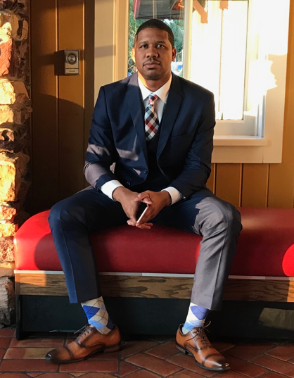

Christopher Douglas
Contact Me

Summary
My name is Chris Douglas based out of charlotte, NC and surrounding areas.
Im a hard worker with a passion for learning and growing my skills. I have
great critical thinking skills and a love for technology with a background
in customer service, help desk suport and hardware and software
troubeshooting.I'm a aspiring Web developer looking to start a exciting
career with a great company!
Skills
- Critical Thinking
- IT Support
- Active Directory
- Service Now
- Help Desk
- Google Suite
- Microsoft Office
- Software Troubleshootng
Work Experience
-
Help Desk Support Novant Health
Fort Mill, SC January 2023 to Present
-
Overall knowledge of computer operations procedures, operating
systems and platforms required (Windows 10) and Software such as:
MSOffice Suite 2016; O365; Chrome; MS Outlook, Service Desk
Technology; OneDrive; Skype for Business; VM; etc.
-
Understanding of Current techniques and capabilities of personal
computers, local area networks and wide area networks.
-
Good understanding of healthcare applications/software. Effective
communication skills. The ability to organize tasks and resources,
and coordinate activities with other customers/clients is essential.
Effective customer services skills.
-
Provides support to end users for specific customer needs such as
password resets, general support inquiries and other areas as
needed.
-
May interact with network services, software systems engineering,
and/or applications development to restore service and/or identify
and correct core problem.
-
Evaluates and provides resolutions to resolve issues that have
business impact on the Novant facilities and systems.
-
Demonstrates appropriate use of resources tools, i.e. Knowledge
Base, Active Directory, System Monitoring Interfaces, Internet,
Zoom, Bomgar remote service etc.
-
Continuously observes performance monitors and reports problem areas
by responding to system messages as quickly as possible.
Investigates job or system failures and participates in the
correcting of the problems (as needed) as quickly as possible.
-
Quality Auditor Novant Health
NC July 2018 to December 2022
-
Strong knowledge of all Federal/State HIPAA regulations across
Novant Health Enterprise.
-
Quality Auditor has a strong ability to read and interpret legal
documents. Quality Auditor has an advanced knowledge of applications
and is comfortable navigating through multiple systems.
-
Works independently. Prioritizes initiatives, manages resources and
able to multitask.
-
Reviews release of information requests concurrently and/or
retroactively to ensure appropriate disclosure. Appropriate
disclosure includes but is not limited to: HIPAA compliant
authorization/request, minimum necessary standards, turnaround time,
billing, etc.
-
Provides progress updates to supervisors, managers and staff as
appropriate in a timely manner.
-
Utilizes effective communication methods to deliver information that
improves quality of personal and organizational decisions.
-
Release of Information lead
Novant Health
April 2014 to 2018
-
Communication - Obtains requested information from
clinic/departments, prints needed information from other source
systems and provides information for release.
-
Direct and assist team members,conduct bi weekly with team members
to stay up to date on policies and work flow.
-
Accountability - Reconciled all outstanding requests. Fulfilling or
cancelling request, ensuring ROI computer systems are accurate and
up to date.
-
Process- Maintains up-to-date knowledge of policies, state and
federal laws and regulations governing disclosure of protected
health information.
-
Customer satisfaction - Performs job functions adhering to service
principles with customer service focusing innovation.
- Proficient in EMR SYSTEMS Epic,Cerner,Gemms,Iron mountain.
Education
-
Associate in Applied Science in Electronics Engineering Technology
ITT Technical Institute
Charlotte, NC 2010